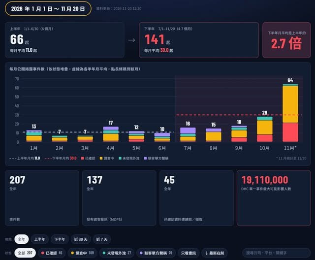

過去 26 小時共 4 則，全部是實質內容（沒有業配或集數推播）：一則談資安需求被 AI 拉高（附 ICSDA 台灣資安事件統計圖），一則轉貼 Anthropic IPO 指南，一則轉貼統一洽購怡和旗下 KFC／Pizza Hut 亞洲業務的路透新聞。後兩則只有連結、沒有評論。
資安事件這幾個月拉得很快，frontier labs 現在看 cyber security 的 TAM 也跟著拉高
攻擊者拿更強的武器出手，企業就被催著必須更新裝備來抵禦
原本擔心 AI 沒有需求，結果 AI 讓企業產生一個不得不處理的問題，再成為解決問題的工具，強阿

圖為 ICSDA「2026 年 1/1～11/20」台灣公開揭露資安事件統計：上半年 66 起（月均 11.0），下半年至 11/20 共 141 起（月均 30.0），下半年月均是上半年的 2.7 倍；月別 7 月 16、8 月 15、9 月 18、10 月 28、11 月（統計至 11/20）64 起。全年 207 起，其中 137 起有發布重訊（MOPS），45 起已確認資料遭讀取／擷取；另標示「DHC 單一事件最大可能影響人數 19,110,000」。
講解
資料來源是中華民國資通安全發展協會（ICSDA）的「2026 台灣資安事件時間軸」。方法上要注意幾點（網站自己有說明）：它以「首次公開揭露日」計，來源包含公開資訊觀測站重大訊息、官方公告、媒體與 ICSDA 暗網監控；重訊是用關鍵字掃描再由 AI 判讀，可能誤判；「駭客單方聲稱」只代表攻擊方說法，不等於確認外洩；同一平台受害的多個品牌各自公告會分別計數，所以筆數不等於獨立攻擊次數。11 月的 64 起暴增，可能部分來自同一供應鏈事件被多家品牌各自揭露，解讀成「攻擊次數暴增 2.7 倍」會高估。
圖上的 DHC 1,911 萬筆是日本 DHC 在 11/18 公布的事件：其行銷用的外部服務 PLAID「KARTE」遭未授權存取，外洩姓名、生日、Email 等（不含信用卡資訊）；前一天 JINS 也公告同一 KARTE 服務可能外洩約 1,829 萬筆。這正是「一個 SaaS 供應商被打穿、下游多家品牌連鎖受害」的典型案例。此事件為何列在台灣時間軸，原網頁未說明（可能與台灣據點或用戶有關），我無法確認。
股癌的論點是：前沿 AI 模型讓攻擊者更容易找漏洞、寫攻擊程式，企業被迫加碼防禦，於是 AI 實驗室（frontier labs）也把資安當成更大的可服務市場（TAM，Total Addressable Market）。這是他的推論，貼文沒附 AI 實驗室的具體說法；資安事件增加也可能來自揭露規範變嚴（上市櫃重訊要求）、統計口徑等因素，未必全是 AI 造成。投資上對應的是資安軟體（端點、身分驗證、SaaS 安全）與 AI 實驗室本身的資安產品線，但需求增加不等於個別公司一定受惠。
https://www.fool.com/investing/2026/11/18/anthropics-14-trillion-ipo-the-ultimate-guide/
講解
只轉貼連結、沒有評論。Motley Fool 原文未直接讀取，以下以其他媒體報導為準。Anthropic（Claude 的開發商）在 Nasdaq 掛牌，代號 ANT。招股時價格區間 70–78 美元、目標估值約 1.4 兆美元；據 Bloomberg、TNW 報導最終定價 83 美元，高於區間，完全稀釋估值約 1.49 兆，IPO 募資至少 680 億美元，加上同價對 Nvidia、Microsoft、Google、台積電、Broadcom、AMD、Micron 等策略夥伴的 260 億私募，合計逾 940 億，報導稱是史上最大股票發行（超過 SpaceX 6 月 IPO）。11/19（週四）開始交易；有標題稱開盤大漲 34%，但我沒讀到內文，未確認。
依更新後招股書（媒體轉述）：2026 上半年營收 163 億美元、淨損 807 億美元；公司為公益公司（PBC），創辦人透過特殊無經濟權股份保有 50.1% 投票權。需注意的風險：龐大算力支出承諾、虧損規模、「循環融資」（投資人同時是晶片／雲端供應商，Anthropic 花的錢回流到它們身上）、公眾股東對經營方向影響力有限。標題的「1.4 兆」是定價前估值，最終定價後已更高。
講解
只轉貼連結。這是路透 11/10 的報導（路透原文未直接讀取，以轉載的《The Standard》為準）：統一企業（1216）正與怡和（Jardine Matheson）進行收購其餐飲事業「怡和餐飲集團」的進階談判，一位消息人士稱估值約 4 億美元。該集團在香港、澳門、台灣、越南、緬甸經營約 1,000 家肯德基與必勝客，另有香港外送披薩 PHD，員工約 2.5 萬人，EBITDA 約 3,500–4,000 萬美元（換算估值約 10–11 倍 EV/EBITDA）。5 月時曾報導凱雷與百勝中國也有興趣。
要注意這是匿名消息人士說法，條件未定，可能年底前簽約但仍有變數；怡和不予置評，統一未回應。對統一而言，是在 7-ELEVEN、星巴克等通路之外再加速食連鎖，並延伸到越南等東南亞市場；實際影響要看最終價格與融資方式。